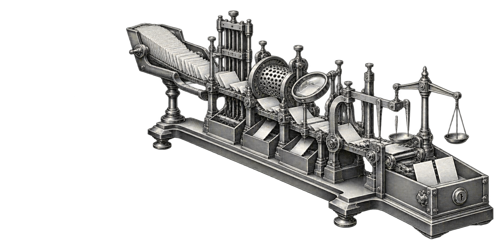

A sleeve's P&L is a claim; the toolkit is the cross-examination. One pipeline — luck, overfitting, specification, friction, multiplicity, allocation — that every sleeve must survive before capital. The latest completed audit put 113 repositories through the gate; the public corpus now contains 133.
A sleeve emits a raw signal; the toolkit intercepts it and runs it down one fixed ladder. Promotion to the allocator requires surviving every layer. Each catches a different way a backtest lies, and the graveyard is full because the standard is visible rejection, not survivorship.
The flagship result is what the pipeline does to BLAQUE BAUX itself. Run on the real recorded returns of the whole corpus, the governed spine cuts the keeper list to what survives multiplicity, specification, and factor decomposition — the verdict no single sleeve's README can give.
Across the ~44 independent sleeve tests, the expected maximum Sharpe by luck alone is +0.93 — any single sleeve under roughly 0.9 is indistinguishable from the best-of-luck draw. Ranked on raw Sharpe, about a dozen "survive" — but that list ranks beta: documented nulls whose high number is a raw factor (high-beta, quality), and managed-beta sleeves at correlation ≈ 1. Ranked on edge over benchmark, only four clear Benjamini-Hochberg, and two of those are not yet specification-audited — leaving two confirmed, spec-robust, non-beta edges. The sleeve map seals it: the keeper book is 1.8 effective bets, 68% factor-R², and ~0 residual alpha — a "diversified" book that is mostly market, low-vol, and momentum beta wearing many names. The breakthrough layer is built to act on exactly this: shrink the lucky and factor-fragile sleeves toward zero and size the few real residual edges. Headline Sharpe falls; honest, out-of-sample-survivable Sharpe rises.
Read the full corpus audit →A second pass added eight gates — seven refine the layers above, one (attribution) is new. Deduped from a larger proposal and built on the established methods behind each (CUSUM, Hansen SPA, Harvey-Leybourne-Newbold, the Harvey-Liu haircut, Leamer bounds, McCloskey-Ziliak), not unverifiable citations. Python in nullbar, ported to Julia base (module_14).
The toolkit is open. The prototype is a readable Python reference; the system of record is the Julia engine the live spine already runs on.